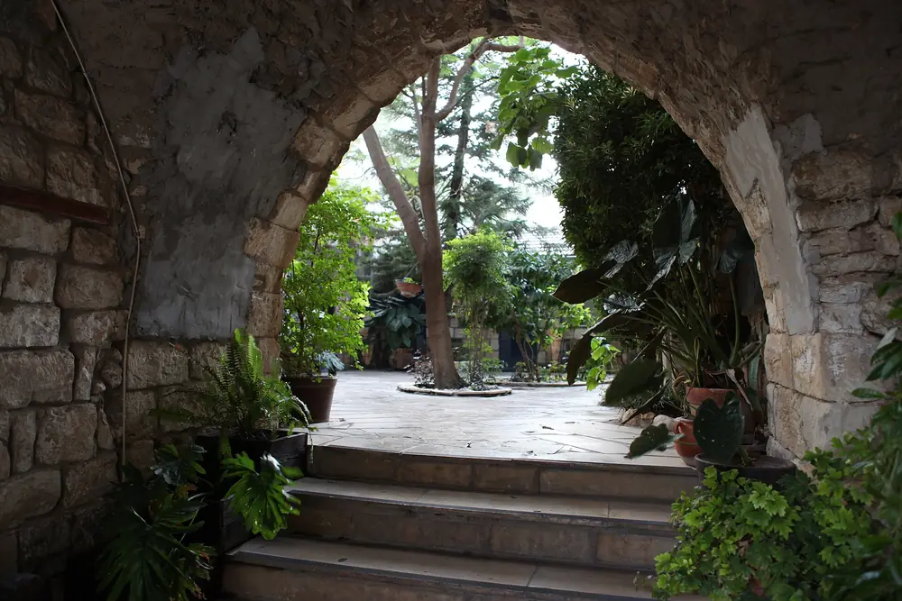
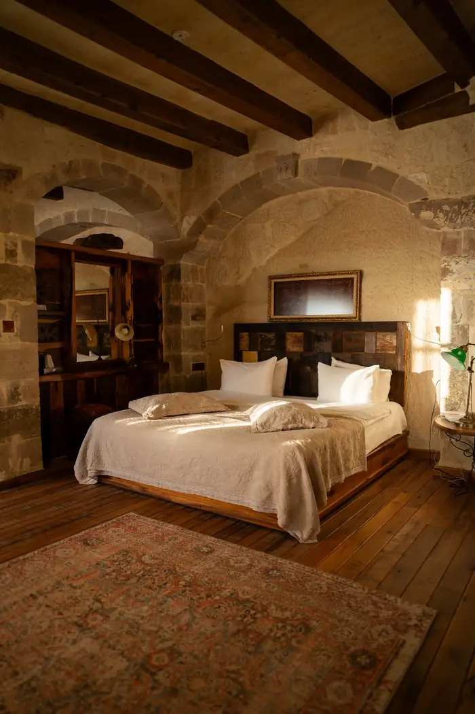
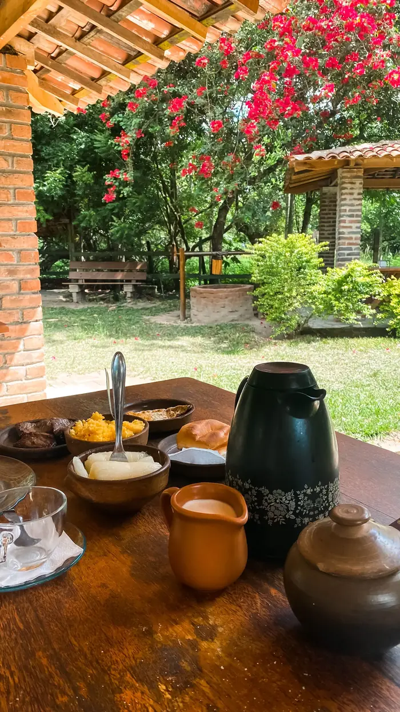
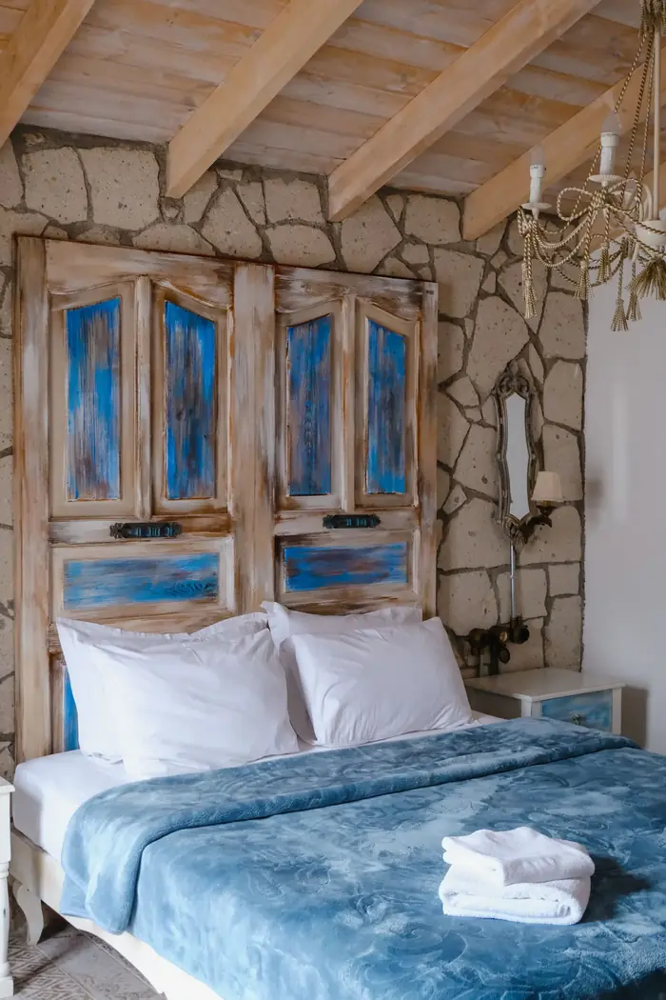
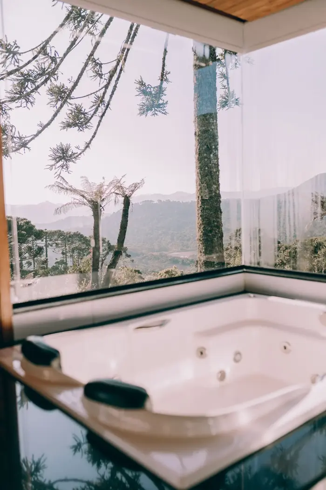
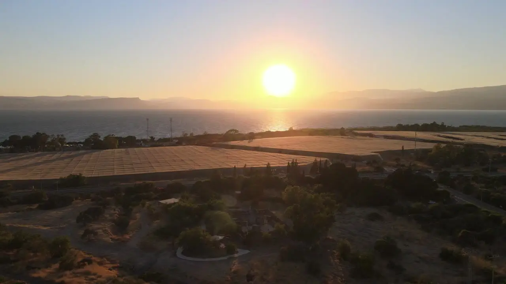
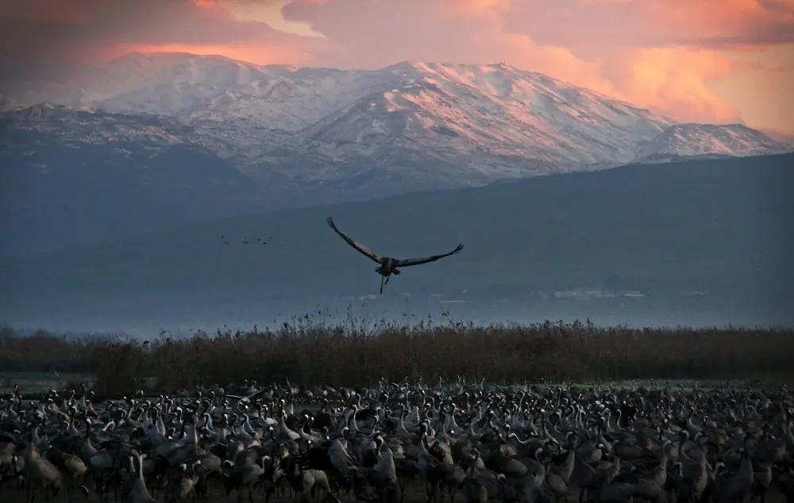

ראש פינה העתיקה · מאז 1882
שלוש סוויטותאבןבלבהמושבה
בית אבן משוחזר ברחוב החלוצים, גינה עם עץ תאנה ותיק, ובוקר שמתחיל מול החרמון. מקום שקט לזוגות שרוצים לנוח באמת.

החצר הפנימית · ראש פינההבית
אבן בזלת, תקרות קמרון ושקט של פעם.
הבית נבנה בימי המושבה הראשונים ושוחזר אבן אחר אבן. השארנו את הקירות העבים, את חלונות העץ הכחולים ואת החצר, והוספנו את מה שצריך לחופשה טובה: מיטות גדולות, ג׳קוזי, מטבחון ושקט.

הסוויטות
קירות אבן, מיטת קינג וג׳קוזי

הבוקר
ארוחת בוקר גלילית בחצר, עד 11:00
הסוויטות
שלוש סוויטות, כל אחת עם אופי משלה
בכל הסוויטות: מיטת קינג, מצעי כותנה, מטבחון עם מכונת אספרסו, מיזוג, Wi‑Fi וחניה פרטית. ארוחת בוקר כלולה במחיר.
סוויטת הבזלת
החדר הוותיק בבית: קירות בזלת בעובי מטר, תקרת קמרון ואח מבוערת לחורף. מקום להתכרבל בו עם ספר כשבחוץ יורד גשם.
- אמבטיה זוגית מאבן ומקלחת גשם
- אח עצים (נובמבר–מרץ)
- פטיו פרטי אל הגינה

40 מ״רסוויטת התכלת
חלונות העץ הכחולים המקוריים נפתחים למרפסת שמשקיפה על עמק החולה והחרמון. בבוקר בהיר רואים את השלג.
- מרפסת נוף פרטית עם ערסל
- ג׳קוזי זוגי בחדר הרחצה
- פינת קפה עם פולים מקלייה בגליל

55 מ״רסוויטת הגפן
הסוויטה הגדולה בבית, מתחת לגג הרעפים. ג׳קוזי מול חלון פנורמי ובקבוק יין מיקב בגליל שמחכה לכם בהגעה.
- ג׳קוזי פנורמי מול העמק
- בקבוק יין גלילי בהגעה
- יציאה מאוחרת בימי חול, עד 13:00

השמש שוקעת מעל הכנרת. הלילה מתחיל במרפסת.
25 דקות נסיעה מהבית
החוויה
הפרטים הקטנים שעושים חופשה
אנחנו מארחים לבד, בלי קבלה ובלי תורים. כל מה שצריך מחכה לכם בחדר, ומה שלא, מספיקה הודעה.
ארוחת בוקר גלילית
גבינות מהמחלבות בסביבה, שקשוקה, לחם מהמאפייה במושבה ופירות העונה. מוגשת בחצר או בחדר.
יין מהגליל
מבחר יינות מיקבי בוטיק בגליל העליון וברמת הגולן, ומפה של יקבים שאפשר לבקר בהם.
ג׳קוזי ושקט
ג׳קוזי זוגי בכל סוויטה, חלוקים, מלחי אמבט, ושום טלוויזיה שתפריע. אם בכל זאת רוצים, יש מסך חכם.
מסלולים מהדלת
נחל ראש פינה, גן הברון ומצפה נמרוד במרחק הליכה. השאירו את הרכב בחניה ליום שלם.
גלריה
להסתכל לפני שמגיעים


הסביבה
הגליל העליון מתחיל כאן
ראש פינה יושבת על המדרון בין הר כנען לעמק החולה. מכאן הכול קרוב: הסמטאות של צפת, הצפרות בחולה, היקבים ברמת הגולן והכנרת.
- מצפה נמרוד וגן הברוןתצפית על המושבה והעמק8 דק׳ הליכה
- צפת העתיקה ורובע האמניםסמטאות, גלריות ובתי כנסת15 דק׳ נסיעה
- אגמון החולהעגורים בחורף, אופניים כל השנה20 דק׳ נסיעה
- הכנרתחופים ושקיעות25 דק׳ נסיעה
- החרמוןשלג בחורף, מסלולים בקיץכשעה

אין צ׳ק־אאוט מוקדם. יש קפה במיטה.
יציאה עד 12:00 · בימי חול עד 13:00
מה כותבים האורחים
ביקורות
כך ייראו כאן ביקורות אמיתיות מגוגל או מ־Booking. בדמו הזה הטקסטים הם לדוגמה בלבד ולא נכתבו על ידי אורחים אמיתיים.
״החדר היה שקט כמו שהבטיחו. ישבנו במרפסת עד מאוחר ובבוקר ראינו את החרמון לבן משלג.״
״ארוחת הבוקר בחצר הייתה שווה את הנסיעה. הלכנו ברגל לנחל ראש פינה ולא נגענו ברכב יומיים.״
״הג׳קוזי מול החלון, היין שחיכה לנו והיחס האישי. יצאנו מתוכננים לחזור בחורף.״
מחירים והזמנה
מחיר ברור, בלי הפתעות
| סוויטה | א׳–ד׳ | ה׳–ש׳ |
|---|---|---|
| התכלת | ₪1,150 | ₪1,450 |
| הבזלת | ₪1,250 | ₪1,550 |
| הגפן | ₪1,550 | ₪1,950 |
מינימום שני לילות בסופי שבוע ובחגים. ביטול ללא עלות עד 14 יום לפני ההגעה. המחירים באתר לדוגמה הם להמחשה בלבד.
איך מגיעים
רחוב החלוצים, ראש פינה העתיקה
- כתובתראש פינה העתיקה (כתובת לדוגמה)
- צ׳ק־אין / צ׳ק־אאוטמ־15:00 · עד 12:00
- טלפון ווואטסאפ04-000-0000 (מספר לדוגמה)
- חניהחניה פרטית צמודה, חינם
- ניווט ב־Waze
שאלות נפוצות
לפני שמזמינים
האם המקום מתאים לילדים?
הסוויטות מיועדות לזוגות ולמבוגרים מגיל 16. כך נשמר השקט שבשבילו מגיעים.
האם ארוחת הבוקר כלולה?
כן. ארוחת בוקר גלילית מוגשת בין 8:30 ל־11:00 בחצר, או בחדר בתיאום מראש.
מה מדיניות הביטול?
ביטול ללא עלות עד 14 יום לפני ההגעה. אחר כך נחייב 50% מסכום ההזמנה, אלא אם החדר הוזמן מחדש.
האם אפשר להגיע עם כלב?
לא בשלב זה. בגליל יש פנסיונים טובים לכלבים, ונשמח להמליץ.
יש כשרות?
ארוחת הבוקר חלבית ומוגשת מכלים נפרדים. במטבחון יש פלטה ומיחם לשבת.